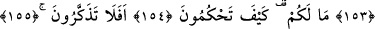

NASIL HÜKMEDİYORSUNUZ?
HİÇ DÜŞÜNMÜYOR MUSUNUZ?
149. Putperestlere sor: Kızlar Rabbinin de erkekler onların mı?
150. Yoksa biz melekleri onların gözü önünde kız olarak mı yarattık?
151, 152. Dikkat edin, kesinlikle yalan uydurup söylüyorlar; «Allah doğurdu»
diyorlar. Onlar şüphesiz yalancıdırlar.
153. Allah, kızları oğullara tercih mi etmiş!
154, 155, 156. Ne oluyor size? Nasıl hükmediyorsunuz? Hiç düşünmüyor
musunuz? Yoksa sizin açık bir deliliniz mi var?
157. Doğru sözlülerden iseniz, kitabınızı getirin!
158. Allah ile cinler arasında da bir soy birliği uydurdular. Andolsun, cinler de
kendilerinin hesap yerine götürüleceklerini bilirler.
159. Allah, onların isnat edegeldiklerinden yücedir, münezzehtir.
160. Allah’ın ihlâsa erdirilmiş kulları müstesnadır (onlar azap görmeyeceklerdir).
161, 162, 163. Sizler ve taptığınız şeyler! Hiçbiriniz, cehenneme girecek
kimseden başkasını Allah’a karşı azdırıp saptıramazsınız.